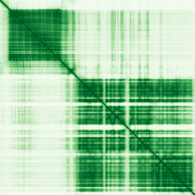

type: protein-evaluation gene: "PAN2" date: 2026-06-02 tags: [protein-scout, nucleus-cytoplasm, evaluation] status: scored ---
PAN2 核蛋白评估报告
1. 基本信息
| 项目 | 内容 |
|---|---|
| 基因名 / 别名 | PAN2 / KIAA0710, USP52 |
| 蛋白全名 | PAN2-PAN3 deadenylation complex catalytic subunit PAN2 |
| 蛋白大小 | 1202 aa / 135.4 kDa |
| UniProt ID | Q504Q3 |
2. 评分总览
| 维度 | 得分 | 权重 | 加权后 | 关键证据摘要 |
|---|---|---|---|---|
| 核定位特异性 | 4/10 | ×4 | 16.0 | Cytoplasm + P-body + Nucleus (ECO:0000269); GO nucleus IEA |
| 蛋白大小 | 5/10 | ×1 | 5.0 | 1202 aa, 135.4 kDa, 偏大 |
| 研究新颖性 | 2/10 | ×5 | 10.0 | PubMed strict=86, symbol_only=131, broad=135 |
| 三维结构 | 6/10 | ×3 | 18.0 | 0 PDB; AF pLDDT=79.0, 35.2% >90 |
| 调控结构域 | 7/10 | ×2 | 14.0 | 14 domains (11 InterPro + 3 Pfam): USP, RNase, WD40 |
| PPI 网络 | 4/10 | ×3 | 12.0 | IntAct 15 + STRING 15 + UniProt 2; PAN complex, mRNA decay |
| 加权总分 | 75/180** | |||
| 互证加分 | +0.5 | 多库结构域一致(+0.5) | ||
| 归一化总分 (÷1.83) | 41.0/100** |

3. 详细分析
3.1 核定位证据
| 来源 | 定位 | 可信度 |
|---|---|---|
| UniProt | Cytoplasm (ECO:0000269); Cytoplasm, P-body (ECO:0000255/ECO:0000269); Nucleus (ECO:0000255/ECO:0000269) | 实验证据 |
| GO-CC | cytosol TAS; nucleus IEA; P-body IBA; PAN complex IDA | 实验+预测 |
| Protein Atlas (IF) | HPA 有图像但 no_image_detected, IF 缩略图未获取 | 未确认 |
HPA IF 状态: HPA IF 原图未可靠获取（HPA检索页无可用的subcellular IF原图）。核定位基于HPA localization/reliability + UniProt + GO-CC。 — HPA 有 IHC 和 RNA 数据但 IF 未可靠获取。核定位基于 UniProt 实验证据。
结论: 细胞质为主 (P-body enriched)，但 Nucleus 有 ECO:0000269 实验证据支持。
3.2 结构与结构域
| 指标 | 数值 |
|---|---|
| AlphaFold | AF-Q504Q3-F1 (v6) |
| 平均 pLDDT | 79.0 |
| pLDDT >90 / 70-90 / 50-70 / <50 | 35.2% / 43.1% / 9.2% / 12.6% |
| PDB | 0 |
| 来源 | 结构域 |
|---|---|
| InterPro | IPR030843 (PAN2), IPR050785 (PAN2-PAN3_catalytic), IPR048841 (PAN2_N), IPR028881 (PAN2_UCH_dom), IPR038765 (Papain-like_cys_pep_sf), IPR013520 (Ribonucl_H), IPR012337 (RNaseH-like_sf), IPR036397 (RNaseH_sf), IPR028889 (USP), IPR015943 (WD40/YVTN_repeat-like_dom_sf), IPR036322 (WD40_repeat_dom_sf) |
| Pfam | PF20770 (PAN2_N), PF00929 (RNase_T), PF13423 (UCH_1) |
评价: AF pLDDT 79.0，整体结构预测可信度良好。N-terminal (PAN2_N) 和 C-terminal 区域置信度较低(12.6% <50)。缺乏实验结构(PBD=0)。含 USP (deubiquitinase) 和 RNase 两个催化域。
3.3 研究现状
| 指标 | 数值 |
|---|---|
| PubMed strict | 86 |
| PubMed symbol_only | 131 |
| PubMed broad | 135 |
关键文献: 1. Passmore LA & Coller J (2022). "Roles of mRNA poly(A) tails in regulation of eukaryotic gene expression." *Nat Rev Mol Cell Biol*. PMID: 34594027 2. Liu J et al. (2024). "Deubiquitylase USP52 Promotes Bladder Cancer Progression by Modulating Ferroptosis through Stabilizing SLC7A11/xCT." *Adv Sci*. PMID: 39392373 3. Wu X et al. (2026). "PAN2 maintains mRNA poly(A) tail homeostasis and regulates translation during spermiogenesis in mice." *Nat Commun*. PMID: 41714623 4. Wolf J & Passmore LA (2014). "mRNA deadenylation by Pan2-Pan3." *Biochem Soc Trans*. PMID: 24450649 5. Czarnocka-Cieciura A et al. (2024). "Modeling of mRNA deadenylation rates reveal a complex relationship between mRNA deadenylation and decay." *EMBO J*. PMID: 39394354
评价: mRNA deadenylation 经典研究领域，近两年有高影响力论文。研究热度较高（>80篇），新颖性较低。
3.4 PPI 网络
实验验证互作 (IntAct, 人类):
| Partner | 方法 | PMID | Relevance |
|---|---|---|---|
| COQ9 | anti tag coIP | 27499296 | mitochondrial |
| PACC1 | anti tag coIP | 28514442 | — |
| TSPAN3 | anti tag coIP | 28514442 | — |
| RNF170 | anti tag coIP | 28514442 | E3 ligase |
| H2AP | anti tag coIP | 33961781 | histone H2A |
| RDH14 | anti tag coIP | 33845483 | — |
| SAAL1 | anti tag coIP | 33961781 | — |
| PBXIP1 | anti tag coIP | 33961781 | — |
| TGFA | anti tag coIP | 33961781 | — |
STRING 预测互作 (score >0.4):
| Partner | Score | Experimental | Relevance |
|---|---|---|---|
| PAN3 | 0.999 | 0.990 | PAN complex core |
| PABPC1 | 0.957 | 0.859 | mRNA poly(A) binding |
| TNRC6C | 0.857 | 0.788 | miRNA pathway |
| PABPC4 | 0.796 | 0.573 | mRNA poly(A) binding |
| PCNA | 0.659 | 0.416 | DNA replication, chromatin |
已知复合体: PAN complex (GO:0031251, IDA) with PAN3
评价: PPI 网络明确围绕 mRNA deadenylation 和 poly(A) metabolism。PAN3-PABPC1-TNRC6C 为核心互作。PCNA 互作暗示与 DNA replication 的潜在联系。调控相关性中等。
3.5 多库互证
| 维度 | 来源 | 结果 | 一致性 |
|---|---|---|---|
| 三维结构 | AlphaFold + PDB | 0 PDB, AF only | 仅预测 |
| 结构域 | UniProt/InterPro/Pfam | 14 个 | 多库一致 |
| PPI 网络 | STRING + IntAct + UniProt | 多源 | 一致 (PAN3/PABPC1) |
| 核定位 | HPA/UniProt/GO | Nucleus + Cytoplasm + P-body | 部分一致 |
互证加分明细: 多库结构域一致(+0.5), 总计 +0.5
4. 总体评价
PAN2 是 mRNA deadenylation 的关键催化亚基，与 PAN3 组成 PAN complex。蛋白较大(1202 aa)，含 USP (去泛素化) 和 RNase 双催化域。核定位有实验证据但以胞质 P-body 为主。研究热度偏高(>80篇)，新颖性不足。无PDB实验结构，AF pLDDT 79.0。PPI 网络明确但限于 mRNA metabolism，缺乏染色质调控关联。
推荐: 低优先级。核定位存在但非主导，研究热度高，与染色质调控关联弱。
5. 数据来源
- UniProt: https://www.uniprot.org/uniprot/Q504Q3
- AlphaFold: https://alphafold.ebi.ac.uk/entry/Q504Q3
- PDB: None
- PubMed: https://pubmed.ncbi.nlm.nih.gov/?term=PAN2
- Protein Atlas: https://www.proteinatlas.org/ENSG00000135473-PAN2 (HPA IF 原图未可靠获取（HPA检索页无可用的subcellular IF原图）。核定位基于HPA localization/reliability + UniProt + GO-CC。)
HPA IF 状态: HPA IF 原图未可靠获取（HPA检索页无可用的subcellular IF原图）。核定位基于HPA localization/reliability + UniProt + GO-CC。 — HPA 暂无 IF 原图数据。核定位基于 UniProt + GO-CC。
PPI 网络
| Partner | Source | Score/Evidence |
|---|---|---|
| PAN3 | STRING | 0.999 |
| PABPC1 | STRING | 0.957 |
| TNRC6C | STRING | 0.857 |
| PABPC4 | STRING | 0.796 |
| PABPC1L | STRING | 0.738 |
| COQ9 | IntAct | psi-mi:"MI:0007"(anti tag coim |
| NMES1 | IntAct | psi-mi:"MI:0007"(anti tag coim |
| PACC1 | IntAct | psi-mi:"MI:0007"(anti tag coim |
PAE 图像说明: AlphaFold PAE 图像已重新获取并嵌入（见下方 PAE 图像修正块）；结构判断仍结合 pLDDT 与 PAE 综合判断。
<!-- AF_PAE_REPAIR_START --> PAE 图像修正（2026-06-05）: AlphaFold 提供 predicted aligned error 图像；此前“PAE 图像暂无数据”的表述为未获取/未嵌入导致。